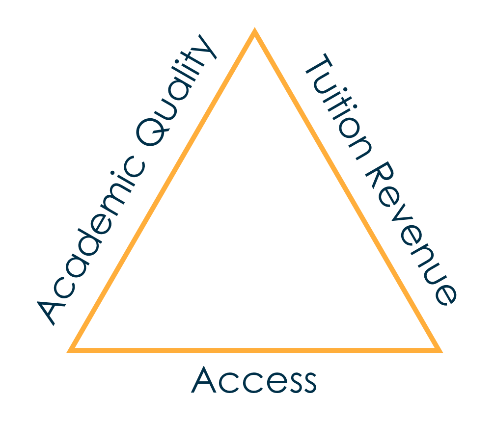
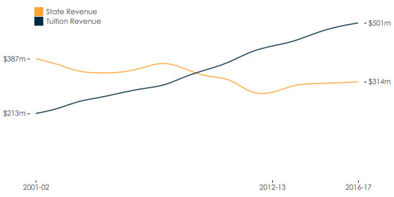

The “Varsity Blues” admissions scandal captured national attention by showing how the rich and famous used back doors to bribe their way into selective universities. While the outcry that has resulted is justified, Varsity Blues only scratches the surface of the troubling practices plaguing college admissions, even at public research universities that were founded with the mission of providing opportunity and social mobility for state residents.1 Today, many state flagship universities are increasingly unrepresentative of the socioeconomic and racial diversity of the state they serve, in large part because they enroll a growing number of affluent, out-of-state students. This systematic preference for wealth, at times independent of merit, reveals how incentives created by policy decisions and unstable funding streams can distort the enrollment priorities of public universities—with powerful and far-reaching consequences for socioeconomic and racial equality in college access.
Mainstream policy discussions often attribute access inequality to the academic achievement gap between low-income and affluent students.2 However, Table 1 below shows that there is actually an abundance of students from lower socioeconomic quintiles who are well-qualified for admission into competitive universities. Yet unfortunately, Table 2 shows that these high-achieving, low-income students are much more likely than their affluent peers to attend community colleges instead. Policymakers refer to this phenomenon as “under-matching,” the idea that high-achieving, low-income students do not apply to selective institutions because they are unaware that selective institutions would admit them and provide generous financial aid packages.3 However, a recent evaluation by the College Board—in which 785,000 high-achieving low- and middle-income students were randomly given additional information about their college choice and financial aid opportunities—found no effect on the probability of those students enrolling in a selective institution.4 These results complement a growing research base that suggests that student achievement and student decisions about where to apply are not the dominant explanations for access inequality.
An alternative explanation is that university enrollment priorities may be biased against low-income students and/or students of color. If so, fixing student achievement and college application decisions will ultimately fail to overcome the access inequality. However, most college access policies focus on changing student behavior because policymakers typically know little about university enrollment priorities and therefore treat universities as passive recipients of applications. In reality, universities are very purposeful about which students they enroll and spend substantial resources identifying and pursuing desired prospects. Therefore, we argue that knowing which student populations are targeted by university recruiting efforts is a credible indicator of their enrollment priorities.
This report analyzes the recruiting behavior of public research universities in order to assess the extent to which university enrollment priorities contribute to access inequality. We begin by providing background information about the enrollment management industry and how universities go about recruiting desired prospects. Next, we present results from a study highlighting how most public research universities make far more out-of-state visits than in-state visits and that these out-of-state visits focus on affluent, predominantly white high schools. Finally, we discuss the policy implications of these findings, emphasizing the relationship between public funding for higher education and the enrollment priorities of public universities.
Reports showing that universities stack the deck for rich kids are a dime a dozen. We explain why universities behave this way, and we begin a discussion about what can be done to change it.
Table 1: Population weighted number of high-achieving students by socioeconomic quintile
Table 2: Population weighted initial post-secondary destination of high-achieving students by socioeconomic quintile
Background
Enrollment Management by Public Research Universities
While policy debates about access to higher education often focus on student behavior, universities are purposeful about which students they pursue and expend substantial resources on crafting their incoming class. Understanding the relationship between university enrollment behaviors and access inequality requires a basic understanding of the enrollment management industry.
Specifically, enrollment management (EM) is a profession that integrates techniques from marketing and economics in order to “influence the characteristics and the size of enrolled student bodies.”5 EM is also a common university administrative structure, and many institutions have an Office of Enrollment Management that coordinates the activities of the teams responsible for admission, financial aid, marketing, and recruiting.
Figure 1: Iron triangle of enrollment management

Figure 1 displays the “iron triangle” of enrollment management, which depicts the maxim that universities care about three broad enrollment goals: access, academic quality, and tuition revenue. For public universities, the “access” goal refers to access for state residents and access for underserved student populations, such as first-generation, underrepresented students of color. Across sectors, “academic quality” often refers in practice to the annual U.S. News and World Report college rankings. Because resources are scarce, the imagery of the iron triangle suggests that pursuing one goal involves trade-offs with the others. Growing preoccupation with rankings incentivizes universities to prioritize the academic quality goal, while state disinvestment incentivizes universities to prioritize the tuition revenue goal and discourages universities from enrolling large numbers of low-income students. Consistent with this idea, average state funding at public research-extensive universities declined from $387 million in 2001-02 to $280 million in 2012-13, recovering only to $314 million by 2016-17 despite several years of economic growth.6 By contrast, average net tuition revenue at these institutions increased from $213 million in 2001-02 to $501 million in 2016-17.
Figure 2: Average state and tuition revenue of public research-extensive universities, 2001-02 through 2016-17

Creating the Out-of-State University
Public research universities have responded to these declining state appropriations by dramatically increasing nonresident enrollment, which they’ve done for one simple and economically rational reason: out-of-state students often pay two- to three-times more than residents. In fact, empirical research has shown that a 10% decline in state appropriations was associated with a 4.6% increase in nonresident freshman enrollment at public research institutions.7 Between 2001-02 and 2016-17, average nonresident freshman enrollment at the nation’s 63 public research-extensive universities increased from about 800 (19% of the freshman class) to over 1,400 (26% of the freshman class).8
Nationally prestigious public research universities, such as the University of Michigan and the University of California, Los Angeles (UCLA), enjoy strong demand from high-achieving out-of-state students. However, most public research universities do not have strong national name recognition and compete for out-of-state students who were rejected by flagship universities in their own state. For example, the University of Arizona may pursue Californians denied by the University of California system and the University of Arkansas may pursue Texans denied by the University of Texas-Austin and Texas A&M. As competition for out-of-state (and international) students increases, less prestigious public flagship universities have also adopted institutional “merit aid” programs that are often specifically designed to target out-of-state students with mediocre academic achievement.9–13
In response to these trends, legislators in several states including California have proposed nonresident enrollment caps based on the premise that nonresident students “crowd out” access for residents. University administrators counter that amidst state budget cuts, nonresident tuition revenue enables universities to finance: (1) resident access and (2) faculty employment necessary to educate students. Our previous research assessed these claims empirically. On one hand, we found that nonresident enrollment has no effect on resident enrollment for public research universities as a whole and has a negative effect on resident enrollment at nationally prestigious universities.14 On the other hand, we found that nonresident enrollment has a strong positive relationship with faculty hiring.15 Specifically, enrolling 100 additional nonresident freshmen was associated with hiring 1.42 new tenure-line faculty, while enrolling 100 additional resident freshmen was associated with hiring 0.64 tenure-line faculty. Most notably, however, we found that nonresident enrollment growth affects student composition in undesirable ways. Since nonresident students tended to be more affluent and were less likely to be black or Latinx than resident students, growth in the share of nonresident students was associated with declines in the share of low-income students receiving federal need-based Pell Grants and black or Latinx students at public research universities.16
The Enrollment Funnel
Figure 3 depicts the enrollment funnel, a conceptual tool used by the EM industry to describe stages in the student recruitment process that inform targeted recruiting interventions. The vast majority of research on enrollment management focuses on the final stages of the enrollment funnel, specifically which applicants are admitted and the use of financial aid “leveraging” to convert admits to enrollees.17–23 By contrast, the enrollment management industry expends substantial resources on earlier stages in the funnel, including on “prospects” who represent “all the potential students you would want to attract to your institution,” and “inquiries,” or the prospects that contact the university, including those who respond to university solicitations like emails and brochures and those who reach out on their own by taking actions such as sending SAT/ACT scores to a university or completing a form on the admissions website.24
Figure 3: Enrollment management funnel

Universities identify prospects primarily by purchasing student lists from the College Board and ACT, Inc., which own large databases of prospective college student data. Student lists contain contact details and background information (demographic, socioeconomic, and academic) about individual prospects. Universities control which prospects are included in the list by selecting on criteria such as zip code, race, and academic achievement. Ruffalo Noel Levitz, an enrollment management consulting firm, found that the median public university purchases about 64,000 names.25 These names don’t come cheap. Of the 45 public universities surveyed by Ruffalo Noel Levitz in 2018, the median university spent 14% of its marketing and recruiting budget on student list purchases.26 To provide a concrete example, from 2010 to 2018, the University of Alabama paid $1.9 million to College Board and $349,000 to ACT, Inc. for student data.27
Once identified, prospects are then targeted with recruiting interventions aimed at soliciting inquiries and applications.26, 28 Face-to-face interventions include off-campus visits by university admissions representatives—for example, to a local high school—and on-campus visits by prospects. Non-face-to-face interventions include text messages, emails, and physical mail, such as postcards and brochures. Additionally, universities use paid advertising, including pay-per-click ads from Google and cookie-driven ads that target prospects who visit their website, as well as social media, such as Twitter, Instagram, and YouTube, as a means of generating inquiries and creating positive “buzz” amongst prospects. Given the rise in “stealth applicants” who do not inquire before applying, social media enables universities to tell their story to prospects who do not contact the university and may not wish to be contacted.29
The data science revolution in market research has given birth to a niche industry of higher education enrollment management and enrollment marketing consulting firms. These firms help universities identify prospects by advising on which criteria to select when purchasing student lists and pinpointing which prospects should receive which recruiting interventions—another practice that comes at a high price tag for institutions. Going back to the University of Alabama, from 2010 to 2018 the university paid $4.4 million to the EM consulting firm Hobsons.27, 30 Consultancies like Hobsons integrate proprietary data, publicly-available data, and university-owned data, such as historical data on applicants and IP addresses that visit the university website. As an example of proprietary data, one enrollment management consultancy told us they know the household income, house value, and detailed expenditures of every household in the United States, down to things like the annual expenditures on hockey equipment. Firms then make recommendations by applying these data sources to analytic tools that predict application and enrollment probabilities for each prospect and also predict the effect of recruiting interventions on these probabilities.
Off-Campus Recruiting
It’s important to also note that the growing sophistication of off-campus student recruiting does not stop behind the curtain of online and data-driven marketing research, but instead extends into the world of off-campus visits. In the admissions world, “travel season” refers to the mad dash between Labor Day and Thanksgiving when admissions officers host hotel receptions, attend college fairs, and visit high schools across the country.11 Ruffalo Noel Levitz found that public universities spent 18% of their marketing and recruiting budget on these off-campus techniques, compared to 15% for on-campus visits and 14% for student list purchases.26, 31
Enrollment managers value off-campus recruiting as a means of simultaneously identifying prospects and connecting with prospects already being targeted through mail and email.11, 28, 32 Further, these visits are essential for maintaining long-term relationships with “feeder schools”—and the guidance counselors at these schools—that are a consistent source of students year after year.11, 26 Prior research finds that admissions recruiters prioritize affluent high schools, with a particular focus on private schools, that have the organizational resources and motivation to host successful visits.11
Market research on the effect of off-campus recruiting has found that off-campus visits were the second highest source of inquiries after student list purchases, accounting for 19% of inquiries for the median public university.26 Off-campus visits were also the third highest source of enrollees behind stealth applicants and on-campus visits, accounting for 16% of enrollees. Qualitative research from the perspective of high school students similarly found that high school visits influenced where students applied and where they enrolled.33 These findings were particularly strong for first-generation students. By contrast, affluent students with college-educated parents tended to be less taken by targeted overtures from universities and more concerned about university prestige.
While prior research has found that off-campus recruiting influences the application and enrollment decisions of underrepresented students and accounts for a larger share of university marketing and recruiting budgets, our research is the first to systematically investigate which high schools receive visits by which universities and why this matters to broader inequities across our higher education system.
Research and Findings: Follow the Money
Our original research collected data on off-campus recruiting visits by public research universities, with the goal of assessing socioeconomic, racial, and geographic biases in which schools and communities receive visits. The results presented here analyze off-campus recruiting visits during the 2017 calendar year by a selection of 15 public research universities. These universities came from a sample of public research-extensive universities as defined by the 2000 Carnegie Classification and were institutions from which we collected sufficient data.34 Table 3 shows the number of recruiting visits by type of institution visited—such as public high school, private high school, or other—and whether the visit was in-state or out-of-state. Across all the 15 public research universities in our sample, the majority of visits were to public high schools. However, our most dramatic finding is that most universities made more out-of-state than in-state visits—a principle that runs counter to the stated missions of large, state-based university systems. Seven universities made more than twice as many out-of-state than in-state visits. And, when compared to in-state visits, a disproportionate number of these out-of-state visits were to private high schools.35
In addition, we find that recruiting patterns are often tied to state funding, with universities that had the lowest state funding turning to out-of-state recruiting efforts as a way to generate greater revenue from tuition. As seen in Table 3, the University of Alabama, which experienced large declines in state appropriations following the 2008 recession, made significantly more out-of-state visits than in-state visits. On the other hand, universities that received more state funding tended to have more complete coverage of their home state. For example, North Carolina State University made about twice as many in-state visits than out-of-state visits. Several universities in our sample also made a substantial number of visits to community colleges in their state.
Table 3: State funding and number of events by type, in-state vs. out-of-state
Trends in Median Income of Visited High Schools
Figure 4 shows the average median household income in zip codes of visited public high schools compared to non-visited public high schools for in-state and out-of-state visits. We see that out-of-state visits are heavily focused on affluent communities across all the universities in our sample. For example, the University of Massachusetts-Amherst visited out-of-state public high schools in zip codes where the average median household income was $115,000 while the average income for non-visited schools was $64,000, resulting in a $51,000 gap. The average income disparity between visited and non-visited out-of-state public high schools across all institutions in our sample is around $40,000, suggesting that universities prioritize recruiting students from wealthier communities. In fact, we find that affluent out-of-state schools are significantly more likely to receive a visit even after using regression models that control for factors such as academic achievement and school size.36
Figure 4: Average median household income of visited vs. non-visited public high schools
To hone in even further on how public institutions target their out-of-state recruitment efforts on more affluent students, Figure 5 shows an illustrative example of the University of Pittsburgh’s efforts to recruit students in the Chicago metropolitan area, which was a prime target for out-of-state visits by nearly all universities in our sample. The map shows the visited and non-visited public high schools by the University of Pittsburgh, with each zip code in the Chicago metropolitan area shaded according to median household income. The blue circle markers indicate the location of a public high school, and filled circle markers indicate that the high school is visited by the University of Pittsburgh. As you can see, visited schools are largely concentrated in the more affluent communities located in the northeastern region of the metropolitan area, while schools near the outer edges of the metro area with lower median household incomes are far less likely to receive a visit.
Figure 5: Visits to metro areas by median household income
* An interactive version of the map is available by following the link below. Readers are encouraged to explore the recruiting visits of other universities in our sample by selecting different universities and metro areas. The controls near the bottom left of the map toggle the display of visited and non-visited locations. Each circle marker indicates a location and filled circle markers indicate that the location has been visited by the selected university.
Income bias in in-state public high school visits also exists across the majority of the institutions in our sample, but to a lesser extent. For example, the difference in average median household income between visited and non-visited in-state public high schools by the University of California-Berkeley is $19,000. The average income disparity across all institutions is around $11,000. It should also be noted that two of the institutions, the University of California-Irvine and North Carolina State University, actually visited public high schools in their home state with a lower average income than schools not visited.
Trends in Racial Composition of Visited High Schools
Figure 6 shows the average racial compositions of visited high schools compared to non-visited high schools for in-state and out-of-state visits by the institutions in our sample. Similar to the income results, out-of-state visits to public high schools show the most evidence of racial bias. For the majority of institutions in our sample, visited out-of-state public high schools had a higher percentage of white students and Asian students than non-visited schools and a lower percentage of black, Latinx, and Native American students than non-visited schools. For example, the University of Colorado-Boulder visited out-of-state public high schools where white students made up 56% of enrollment and Asian students made up 13% of enrollment, compared to 49% and 5%, respectively, in non-visited high schools. At the same time, black, Latinx, and Native American students make up 7%, 20%, and less than 0.5% of visited public high school students, respectively, compared to 16%, 27%, and close to 1% of non-visited students. For most of the institutions in our sample, regression results show that the racial bias in out-of-state public high school visits persists even after controlling for other school characteristics.
Figure 6: Average racial composition of visited vs. non-visited high schools by in-state, out-of-state
Figure 7 again shows a map of visited and non-visited public high schools by the University of Pittsburgh in the Chicago metropolitan area. Each zip code is shaded according to the proportion of residents who identify as black, Latinx, or Native American. The majority of visited high schools are concentrated in the northern part of the metro area, where there is a low proportion of black, Latinx, and Native American students. Communities of color are located primarily near the southeastern part of the region, and these public high schools received very few visits.
Figure 7: Visits to metro areas by percent black, Latinx, and Native American
When looking at out-of-state visits to private high schools, Figure 6 shows that the racial composition of students remain relatively consistent between visited and non-visited schools. However, private high schools in general have a higher percentage of white students than public high schools.37 Our analyses found that universities tend to visit a disproportionate number of out-of-state private high schools, as compared to public high schools. Therefore, the overall population of out-of-state students visited by the universities in our sample tended to be more white.
In-state visits, on the other hand, show inconsistent evidence of racial bias across our sample institutions. For example, the University of Alabama visited in-state schools with a larger percentage of white students and a smaller percentage of black, Latinx, and Native American students as compared to non-visited schools in the state, whereas the University of California-Irvine visited in-state schools with a higher proportion of students of color than non-visited schools. Nevertheless, in comparison to out-of-state visits to public high schools, the difference in average racial composition between in-state visited and non-visited students remains relatively small across all cases.
Policy Implications
Mainstream policy debates about socioeconomic and racial inequality in college access often point to deficiencies of students and K-12 schools, citing the “achievement gap” and “under-matching” (the idea that high-achieving, low-income students do not apply to selective institutions because they lack the proper information and guidance from their family and high schools). These explanations motivate policy interventions that attempt to “fix” students, absolving universities of their responsibility to provide equal access. If university enrollment priorities are biased, then improving student achievement and equipping students with better information alone will not overcome access inequality. Therefore, debates about college access should consider university enrollment priorities and how policies can change these priorities.
Using recruiting behavior as an indicator of preferences, our analyses suggest systematic socioeconomic and/or racial bias in the enrollment priorities of many public research universities. Most universities in our sample made far more out-of-state recruiting visits than in-state visits. Out-of-state visits were concentrated in affluent, predominantly white public and private schools, and regression analyses find strong evidence of income and racial bias even after controlling for school size and academic achievement. These results are consistent with recent scholarship on institutional financial aid, which show that many public flagship universities developed “merit” aid programs that specifically target affluent, out-of-state prospects with mediocre academic achievement.9–13 Many state flagship universities seem to be expending more resources finding affluent, middling out-of-state students than they expend on finding high-achieving low- and middle-income students in their own state. Philosophically, this trend is hostile to any reasonable conception of meritocracy.
When universities place more value on affluence as a merit criterion rather than academic achievement, the negative effects on students and on society are profound. High-achieving, low-income students unwanted by their state flagship often attend a nearby community college or state college. Research finds that starting at a community college reduces the likelihood of obtaining a bachelor’s degree by 18 percentage points—from a 50% probability to 32% probability38, 39—and is correlated with longer time to degree and lower lifetime earnings. And while regional public universities fare better than community colleges on degree completion, most states assign their flagship universities the responsibility of preparing the future business, professional, and civic leaders of the state. When public flagship universities ignore poor, minority communities in their backyard, they deny local talent the opportunity to reach its full potential.
Public Funding and Enrollment Priorities
State policymakers have often rationalized funding cuts to public universities on the grounds that institutions can generate their own revenue through tuition. While this assumption may be true for some universities, cuts to public funding create incentives for universities to prioritize the customers who pay the most, thereby shifting higher education from a public good to a private good.
To stem the effects of the current enrollment management practices of public flagship institutions, policymakers can develop funding policies that instead encourage institutions to prioritize the enrollment of more high-achieving state residents, particularly those from low- and middle-income backgrounds. In the section below, we highlight two alternative approaches to funding public universities to mitigate the real effects that state disinvestment has had on recruitment policies over the last decade: block grant funding to universities and a boost in need-based grant aid to students.
Block grant funding is a subsidy that enables universities to pay the costs of educating students without relying on tuition revenue. State appropriations are the dominant source of block grant funding for public universities. When state appropriations decline, universities ask permission to increase resident tuition price. Granting this request reduces the number of state residents who can afford in-state public universities. Denying this request reduces the ability of public universities to subsist from resident enrollment, incentivizing universities to pursue nonresident students. Although the federal government primarily funds higher education through research grants and aid to students, the federal government could also help to increase block grant funding by matching state appropriations. If states and the federal government through a match substantially increased block grant funding, they could simultaneously demand a reduction in resident tuition price and more enrollment spaces for resident students.
In addition, policymakers could turn their attention to increasing need-based grant aid programs, which follow students to the institution they choose to attend. With respect to university enrollment priorities, need-based grant aid increases the purchasing power of poor students, making them more financially attractive to universities that rely on tuition revenue. The most important need-based grant programs are the federal Pell Grant program and state need-based grant aid programs, such as the Cal Grant and Minnesota State Grant. Policy changes that substantially increase maximum need-based aid awards—for example, doubling the maximum Pell Grant award from $6,195 to $12,000—enable a university to enroll a low-income student without substantial need-based institutional aid, thereby creating incentives for universities to enroll more low-income students.
Other policies that increase student purchasing power include state “free college” policies and “income sharing agreements.” State “free college” policies are similar to state need-based aid programs in that they provide grant aid to eligible students attending in-state public institutions. However, in most states that have adopted such programs, the amount of money expended on free college programs is much smaller than the amount expended on need-based aid.40 Therefore, these programs likely have a smaller effect on university enrollment priorities than state need-based aid programs. Though not a grant, income sharing agreements (ISAs) are a private sector approach to increasing student purchasing power. ISAs provide students up-front funds to pay for the cost of attending college. In exchange, students agree to pay some percentage of their income to the investor upon graduation, so long as their income is above some minimum threshold (e.g., $50,000). While ISAs may serve to limit some risks for borrowing students, they can also introduce others—like paying back a sum that greatly exceeds the amount borrowed, or investors being incentivized to support only certain academic programs or students on the basis of anticipated earnings. As more universities consider this option, empirical research is needed to better understand the benefits and risks, and to inform regulatory policy around ISAs.
Policymakers face choices about how generously to fund public universities and how to allocate these funds. Whereas block grants reduce tuition reliance, grant aid to students encourages tuition reliance and competition between institutions for government-funded students. Most university systems are financed through a mix of state block grants, federal and state grant-aid, and out-of-pocket tuition from students (including loans). Rather than recommend a specific allocation approach, we advocate for greater investment overall. Low levels of state appropriations encourage universities to restrict enrollment opportunities, decrease the quality of education, or prioritize enrollment seats for nonresident students and for affluent residents who do not require need-based institutional aid. Weak funding for need-based grant aid ensures that low-income students have weak purchasing power and, therefore, are not financially desirable to universities trying to figure out how to make payroll.
Although state and federal policies cannot directly control university spending decisions, the amount and stability of government funding affects university spending priorities. Policymakers want universities to use public funds efficiently and with a focus on delivering student outcomes. Paradoxically, cutting state appropriations incentivizes universities to increase spending on consumption amenities, including luxury dorms, recreational facilities, and pools with a “lazy river.” In the absence of block grants from the state, universities become reliant on tuition revenue from affluent students who desire such amenities. By contrast, generous state appropriations disincentivize expenditure on amenities because the university is less beholden to the consumption preferences of affluent students. In short, if policymakers want public universities to prioritize education over amenities, they should fund them appropriately.
Regulation and Oversight
Lastly, several states are considering nonresident enrollment caps as a response to out-of-state enrollment growth. Our research suggests that these caps do affect university behavior. The only universities that made more in-state than out-of-state visits were located in states—North Carolina and California—with strong nonresident enrollment caps. However, to be clear, regulation is not an alternative to adequate funding, but rather a complement. State spending on higher education in North Carolina and California is also above the national average. Without adequate state funding, restrictions on university revenue-generating behavior negatively affect the quality of education students receive. State funding cuts force universities to hire fewer faculty or to rely on part-time adjunct faculty. However, we find that public research universities hire more tenure-line faculty in response to nonresident enrollment growth than they do in response to equivalent resident enrollment growth, suggesting that universities are using nonresident tuition revenue to pay core inputs to student education that were once largely financed through state support.15 Therefore, capping nonresident enrollment without providing sufficient state funding incentivizes universities to enroll students who do not require need-based aid and stops universities from hiring core faculty.
Racial biases in university enrollment priorities and recruiting behaviors also deserve greater scrutiny and oversight. Our research finds that public research universities were less likely to visit out-of-state schools with high non-white enrollment, even after controlling for income and academic achievement. Although state funding cuts provide a reasonable rationale for income bias, they do not explain the systematic bias against communities of color. Rather, these results may be due to institutional racism against communities of color. More broadly, a growing number of studies find that universities exhibit a preference for enrolling students of color from affluent, predominantly white public and private schools.41–44
Universities market to and recruit students through advertising and social media, sending them emails and brochures, visiting their schools, and responding to their questions. Racial discrimination can occur at any of these stages. Policymakers devote a substantial amount of attention to potential discrimination in the application review process, and they should apply an equal amount of scrutiny to better understanding which prospects universities target and how they do so during different stages of the enrollment process.
Conclusion
State policymakers often rationalize funding cuts to public research universities based on the assumption that these universities can generate their own revenues through tuition. Our research finds that while most public research universities do successfully grow tuition revenue to compensate for state budget cuts, forcing universities to finance their survival through tuition revenue compels them to prioritize customers who pay the most. As a result, public flagship universities may expend substantial resources recruiting and offering “merit” aid to mediocre out-of-state students who are rejected from public universities in their own state, while high-achieving, low-income in-state students are neglected and often funneled to community colleges that dramatically reduce their chances of ultimately obtaining a bachelor’s degree. This is not a meritocracy. Nor is it an evil plot by universities. It is a rational response to incentives created by government disinvestment in public higher education. Policymakers at both the federal and state levels should give consideration to how they can apply policy levers to provide sustainable financial pathways that enable public research universities to flourish by serving the mission of social mobility that they were founded to serve.
Endnotes
1. Haycock, Kati, Lynch Mary, and Jennifer Engle. Opportunity Adrift: Our Flagship Universities Are Straying from Their Public Mission. Education Trust, 2010.
2. The White House. Increasing College Opportunity for Low-Income Students. The Executive Office of the President, 2014.
3. Hoxby, Caroline M., and Christopher Avery. The Missing "One-Offs": The Hidden Supply of High Merit Students for Highly Selective Colleges. The Brookings Institution, March 2013, 2013.
4. Gurantz, Oded, Jessica Howell, Michael Hurwitz, Cassandra Larson, Matea Pender, and Brooke White. Realizing Your College Potential? Impacts of College Board’s Rycp Campaign on Postsecondary Enrollment. 19-40, Annenberg Institute at Brown University, 2019, http://edworkingpapers.com/ai19-40.
5. Hossler, Donald, and John P. Bean. The Strategic Management of College Enrollments. Jossey-Bass, 1990, pp. xxii, 330p.
6. Author calculations based on the Integrated Postsecondary Education Data System (IPEDS) Finance survey component for a sample of 63 public research-extensive universities, as defined by the 2005 Carnegie Classification.
7. Jaquette, Ozan, and Bradley R. Curs. “Creating the Out-of-State University: Do Public Universities Increase Nonresident Freshman Enrollment in Response to Declining State Appropriations?” Research in Higher Education, vol. 56, no. 6, 2015, pp. 535–65.
8. Author calculations based on the Integrated Postsecondary Education Data System (IPEDS) Student Financial Aid survey component.
9. Burd, Stephen. Undermining Pell, Volume Iv: How the Privatization of Public Higher Education Is Hurting Low-Income Students. New America, 2018, https://www.newamerica.org/education-policy/reports/undermining-pell-iv/.
10. Burd, Stephen. The Out-of-State Student Arms Race: How Public Universities Use Merit Aid to Recruit Nonresident Students. New America Foundation, 2015.
11. Stevens, Mitchell L. Creating a Class: College Admissions and the Education of Elites. Harvard University Press, 2007, p. 308 p.
12. Leeds, Daniel M., and Stephen L. DesJardins. “The Effect of Merit Aid on Enrollment: A Regression Discontinuity Analysis of Iowa’s National Scholars Award.” Research in Higher Education, vol. 56, no. 7, 2015, pp. 471–95, doi:10.1007/s11162-014-9359-2.
13. Adame, Jaime. “UA Relaxes Academic Standards for Out-of-Staters to Get Tuition-Gap Aid.” Arkansas Democrat Gazette, 2019, https://www.arkansasonline.com/news/2019/aug/01/ua-relaxes-academic-standards-for-out-o/.
14. Curs, Bradley R., and Ozan Jaquette. “Crowded Out? The Effect of Nonresident Enrollment on Resident Access to Public Research Universities.” Educational Evaluation and Policy Analysis, vol. 39, no. 4, 2017, pp. 644–69, doi:10.3102/0162373717704719.
15. Jaquette, Ozan, and Bradley R. Curs. “Faculty Hiring at the Out-of-State University.” American Educational Research Journal.
16. Jaquette, Ozan, Bradley R. Curs, and Julie Renee Posselt. “Tuition Rich, Mission Poor: Nonresident Enrollment Growth and the Socioeconomic and Racial Composition of Public Research Universities.” Journal of Higher Education, vol. 87, no. 5, 2016, pp. 635–73.
17. Alon, S. “The Evolution of Class Inequality in Higher Education: Competition, Exclusion, and Adaptation.” American Sociological Review, vol. 74, no. 5, 2009, pp. 731–55.
18. Karabel, Jerome. The Chosen: The Hidden History of Admission and Exclusion at Harvard, Yale, and Princeton. Houghton Mifflin Co., 2005, pp. viii, 711p., [16]p. of plates.
19. Karen, D. “Toward a Political-Organizational Model of Gatekeeping: The Case of Elite Colleges.” Sociology of Education, vol. 63, no. 4, 1990, pp. 227–40.
20. Posselt, Julie Renee. Inside Graduate Admissions: Merit, Diversity, and Faculty Gatekeeping. Harvard University Press, 2016, pp. x, 250pages.
21. Doyle, William R. “Changes in Institutional Aid, 1992-2003: The Evolving Role of Merit Aid.” Research in Higher Education, vol. 51, no. 8, 2010, pp. 789–810.
22. Waddell, Glen R., and Jr. Singell Larry D. “Do No-Loan Policies Change the Matriculation Patterns of Low-Income Students?” Economics of Education Review, vol. 30, no. 2, 2011, pp. 203–14.
23. McPherson, Michael S., and Morton Owen Schapiro. The Student Aid Game. Princeton University Press, 1998.
24. Campbell, Alec. Higher Education Marketing: How to Master Your Admissions Funnel. 2017, https://hop-online.com/blog/higher-education-marketing-admissions-process/.
25. Noel-Levitz, Ruffalo. 2017 Marketing and Student Recruitment Report of Effective Practices. Ruffalo Noel-Levitz, 2017, https://www.ruffalonl.com/papers-research-higher-education-fundraising/campus-organizational-strategy/benchmark-reports-higher-education.
26. Noel-Levitz, Ruffalo. 2018 Marketing and Student Recruitment Report of Effective Practices. Ruffalo Noel-Levitz, 2018, http://learn.ruffalonl.com/rs/395-EOG-977/images/RNL_2018_Student_Recruitment_Marketing_Report_EM-19.pdf.
27. University of Alabama. Open Records. 2019, http://open.ua.edu/.
28. Clinedinst, Mellissa, and Anna-Maria Koranteng. 2017 State of College Admission. National Association of College Admissions Officers, 2017.
29. Dupaul, Stephanie, and Michael S. Harris. “Secret Shoppers: The Stealth Applicant Search for Higher Education.” Journal of College Admission, no. Spring 2012, 2012, pp. 8–16.
30. Figures adjusted using 2018 CPI.
31. Only "traditional advertising" (e.g., billboards, newspapers, magazines, TV, radio) accounted for a higher percentage (24%).
32. Noel-Levitz, Ruffalo. 2016 Report: Cost of Recruiting an Undergraduate Student for Four-Year and Two-Year Institutions. Ruffalo Noel-Levitz, 2016, https://www.ruffalonl.com/papers-research-higher-education-fundraising/campus-organizational-strategy/benchmark-reports-higher-education.
33. Holland, Megan M. Divergent Paths to College: Race, Class, and Inequality in High Schools. Rutgers University Press, 2019.
34. We used two data collection strategies. First, university admissions websites often list upcoming off-campus recruiting events on pages that advertise admissions representatives coming "near you". Therefore, we used "web-scraping" to capture this data on off-campus visits. Second, we issued public records requests to universities asking for data on all their off-campus recruiting visits. Han, Jaquette, and Salazar (2019) provide more detail about how we define off-campus recruiting events, data collection methods, data processing steps, and data quality checks. This table summarizes the data sources and data quality checks conducted for each university analyzed in this report.
35. More details on the proportional vs. actual number of visits to out-of-state private high schools compared to public high schools can be found here.
36. Regression results can be found in the report here.
37. Murnane, Richard J., and Sean F. Reardon. “Long-Term Trends in Private School Enrollments by Family Income.” AERA Open, vol. 4, no. 1, 2018, pp. 1–24, doi:10.1177/2332858417751355.
38. Mountjoy, Jack. Community Colleges and Upward Mobility. Princeton & Chicago Booth, 2018, https://economics.stanford.edu/sites/g/files/sbiybj9386/f/mountjoy_2018_community_colleges_and_upward_mobility.pdf.
39. Long, Bridget T., and Michal Kurlaender. “Do Community Colleges Provide a Viable Pathway to a Baccalaureate Degree?” Educational Evaluation and Policy Analysis, vol. 31, no. 1, 2009, pp. 30–53, doi:10.3102/0162373708327756.
40. Perna, Laura W., Elaine W. Leigh, and Stephanie Carroll. “‘Free College:’ A New and Improved State Approach to Increasing Educational Attainment?” American Behavioral Scientist, vol. 61, no. 14, 2018, pp. 1740–56, doi:10.1177/0002764217744821.
41. Jack, Anthony Abraham. The Privileged Poor: How Elite Colleges Are Failing Disadvantaged Students. Harvard University Press, 2019, p. 276.
42. Jack, Anthony Abraham. “(No) Harm in Asking: Class, Acquired Cultural Capital, and Academic Engagement at an Elite University.” Sociology of Education, vol. 89, no. 1, 2016, pp. 1–19, doi:10.1177/0038040715614913.
43. Posselt, Julie R., Ozan Jaquette, Robert Bielby, and Michael N. Bastedo. “Access Without Equity: Longitudinal Analyses of Institutional Stratification by Race and Ethnicity, 1972-2004.” American Educational Research Journal, vol. 49, no. 6, 2012, pp. 1074–111.
44. Thornhill, Ted. “We Want Black Students, Just Not You: How White Admissions Counselors Screen Black Prospective Students.” Sociology of Race and Ethnicity Sociology of Race and Ethnicity, 2018, p. 233264921879257.